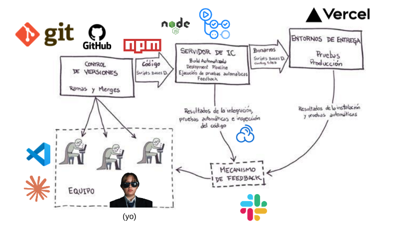

Este proyecto usa Integración Continua y Entrega Continua con GitHub Actions, SonarCloud, Slack y despliegue automático en Vercel. Los tests se ejecutan con Node.js siguiendo Spec Driven Development.
